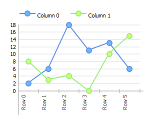
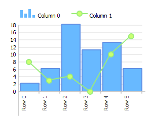
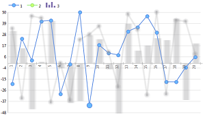
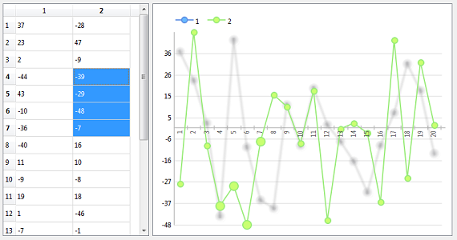

The Charts module contains a set of viewes compatibles with QAbstractItemModel subclasses.
Each column repsresents a serie of data. Nevertheless, some view, like the simple Pie Chart only use the first column.
The data is converted to float numbers. Non-numeric values (alphabetic characters, for example) are considered equal to zero.
The X-axis values are determined by the corresponding section in the horizontal QAbstractItemModel::headerData.
The label of the series is determined by the corresponding section in the vertical QAbstractItemModel::headerData.
Overview
Linear charts display data with points, curves or bars.
It can display several serie of data. A serie of data corresponds to a column in the model.

|
 |
|  | |
| Linear Charts examples | |
This view allows the user to select data. It uses the same selection system than QAbstractItemView and respects the MVC architecture.
The render will be different if the user selects some value
|  |
| Linear chart with selected values. |
When the user selects a value on a serie, the others are blurred. The selected values are highlighted. For the type Marb::Point, the selected value will be bigger. For the type Marb::Bar, the unselected values will be more translucent.
The view can be used with QItemSelectionModel class. If the user selects values in another view that shares the same QItemSelectionModel, the Linear Chart will be updated:
|  |
| The QTableView shares its QItemSelectionModel with the Linear Chart. |
How to use
LinearChart class works as every class inheriting from QAbstractItemView:
for (int i = 0; i < model->rowCount(); ++i ) {
qreal v = (qrand() % ( 30 - 10) + 10);
model->setData( model->index( i, 0 ), v, Qt::DisplayRole );
v = (qrand() % ( 50 - 10) + 10);
model->setData( model->index( i, 1 ), v, Qt::DisplayRole );
}
LinearChart chart;
chart.setModel( model );
chart.show();
model = QStandardItemModel( 6, 1 ) for r in range(model.rowCount()): v = random.randint(10, 2000 ) model.setData(model.index(r,0), v, Qt.DisplayRole ) chart = Marb.LinearChart() chart.setModel( model ) chart.show()
Custom chart
Each column has its own style defined by ChartStyle class. This class determines the type (line, point or bar), the shape of points (ellipse, rectangle, etc.), the pen and the brush.
The easiest way to modify the style of a serie is to get the style with LinearChart::columnStyle( int column ).
See ChartStyle page for more information.
An example of how to change the type of the first column:
LinearChart chart; chart.setModel( model ); ChartStyle style = chart.columnStyle( 0 ); style.setType( Marb::Bar ); chart.setColumnStyle( 0, style ); chart.show();
chart = Marb.LinearChart() chart.setModel( model ) style = chart.columnStyle( 0 ) style.setType( Marb.Type.Bar ) chart.setColumnStyle( 0, style ) chart.show()